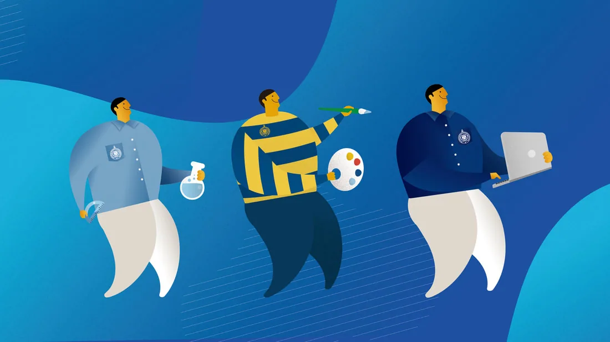
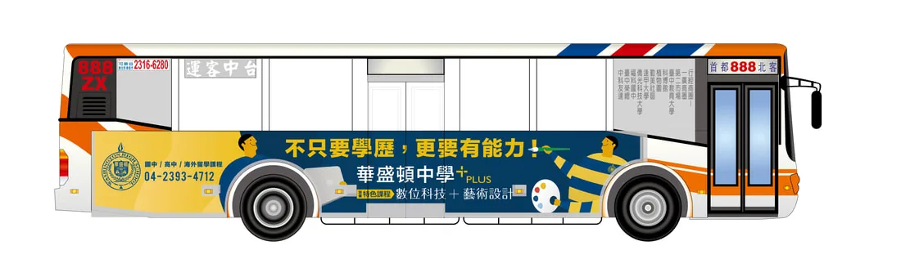
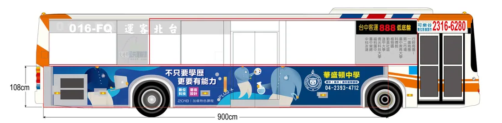

平面設計 ／ 公車廣告設計
華盛頓中學2018招生計劃
Design for WHS
此案擷取華盛頓中學最具特色的國高中制服及體育服來設計人物及色彩運用主軸，強化本校的特色意象。
並透過學生多元學習的圖像來呈現本校2018所推行的特色課程項目以及帶出全能學習發展的期望。






平面設計 ／ 公車廣告設計
Design for WHS
此案擷取華盛頓中學最具特色的國高中制服及體育服來設計人物及色彩運用主軸，強化本校的特色意象。
並透過學生多元學習的圖像來呈現本校2018所推行的特色課程項目以及帶出全能學習發展的期望。


